분류(이진)와 회귀, 서로 성격이 다른 세 개의 공개 데이터셋을 대상으로 문제 정의부터 전처리·모델링·하이퍼파라미터 튜닝·성능 검증까지 전 과정을 수행한 결과를 정리한다. 각 주제마다 담당 모델을 중심에 두고, 동일한 전처리 조건에서 학습한 다른 모델들과 수치로 비교하여 성능 차이의 원인을 추론한다.
본문의 모든 수치는 두 곳에서만 인용한다. 하나는 실행 결과가 저장된 주피터 노트북 출력이다.
다른 하나는 팀 공유 파일 total_result.xlsx의 「4. 팀원별 모델 성능 결과」 중 담당자 '염윤호' 행이다.
출처가 없는 값은 기재하지 않았고, 코드로 수행하지 않은 분석은 '수행하지 않음'으로 명시했다.
세 개의 공개 데이터셋에 대해 전처리부터 성능 검증까지 동일한 절차를 적용했다. Santander는 랜덤포레스트로 ROC-AUC 0.8293, Credit Card는 LightGBM으로 F1 0.8327, Mercari는 선형회귀 계열로 RMSLE 0.4791을 얻었다.
Santander Customer Satisfaction은 불만족 고객이 3.96%뿐인 극단적 불균형 이진 분류 문제다. 분산이 0인 컬럼 34개와 완전 중복 컬럼 29개를 제거해 피처를 369개에서 306개로 줄였다. 랜덤포레스트를 GridSearchCV로 튜닝해 ROC-AUC를 0.7585에서 0.8293으로 끌어올렸다. 분류 임계값을 0.5가 아닌 0.05로 낮춰 재현율 0.6952를 확보했다.
Credit Card Fraud Detection은 사기 거래가 0.173%에 불과한, 더 심한 불균형 문제다. 언더샘플링·SMOTE·SMOTE-ENN 세 가지 보정 기법을 같은 조건에서 비교했다. SMOTE를 채택했을 때 LightGBM이 F1 0.8327로 다섯 개 모델 중 가장 높았다. 테스트 데이터의 사기 147건 중 117건을 잡아내면서 오탐은 17건에 그쳤다.
Mercari Price Suggestion은 148만 건의 상품 텍스트로 판매가를 예측하는 회귀 문제다. 상품명과 상세 설명을 각각 20,000차원으로 벡터화해 44,941차원의 희소 행렬을 만들었다. 정규화가 없는 LinearRegression은 RMSLE 0.4818, L2 정규화를 넣은 Ridge는 0.4791을 기록했다. 고차원 희소 데이터에서는 트리 계열보다 선형 계열이 더 유리하다는 점이 수치로 확인됐다.
데이터 기반 의사결정에서 중요한 것은 예측값 자체가 아니라 그 예측이 얼마나 믿을 만한가이다. 같은 데이터라도 전처리 방식과 평가 지표를 어떻게 정하느냐에 따라 결론이 달라진다. 특히 불균형 데이터에서는 정확도(accuracy)가 사실상 아무 정보를 주지 못한다. Santander 데이터는 모든 고객을 '만족'으로 찍어도 정확도가 96.04%가 나온다. Credit Card 데이터는 모든 거래를 '정상'으로 찍으면 정확도가 99.827%다.
따라서 지표를 먼저 정의하고, 그 지표가 왜 이 문제에 맞는지를 밝히는 작업이 선행되어야 한다. 본 보고서는 그 순서를 지켜 각 주제마다 지표 선정 근거를 모델링보다 앞에 배치했다.
각 주제는 코드의 실행 순서를 그대로 따른다. 데이터 로딩 → EDA → 지표 정의 → 전처리 → 피처 구조화 → 모델링·튜닝 → 성능 검증의 6단계다. 수행하지 않은 단계는 비워두지 않고, 왜 수행하지 않았는지와 그로 인한 한계를 함께 적었다.
익명화된 369개 변수로 은행 고객의 불만족 여부를 예측하는 이진 분류 문제 · 담당 모델: 랜덤포레스트
은행 고객 한 명당 369개의 익명 변수가 주어진다.
목표는 그 고객이 불만족 상태인지(TARGET=1) 아닌지(TARGET=0)를 맞히는 것이다.
정답이 0과 1 두 가지뿐이므로 회귀가 아닌 이진 분류(Binary Classification) 문제다.
| 구분 | 컬럼 | 설명 | 개수 |
|---|---|---|---|
| 식별자 | ID | 고객 고유 번호. 예측에 쓸 정보가 없어 학습 전 제거한다. | 1 |
| 입력 피처 | var3, var15, var38, ind_*, num_*, saldo_*, imp_*, delta_* |
은행이 변수명과 의미를 공개하지 않은 익명 변수. 전부 수치형이다. | 369 |
| 목표 변수 | TARGET | 0 = 만족, 1 = 불만족 | 1 |
| 합계 | 371 | ||
출처: 01_Santander_Random_Forest.ipynb — dataset shape: (76020, 371), cust_df.info()
describe()의 최솟값 행을 보면 이상 신호가 하나 드러난다.
var3의 최솟값이 -999999다.
나머지 변수들은 최솟값이 0 이상인데 이 변수만 극단적인 음수를 갖는다.
실제 관측값이라기보다 결측을 특정 상수로 채워 넣은 흔적으로 보는 것이 자연스럽다.
| 변수 | 최솟값 | 해석 |
|---|---|---|
var3 | -999999.00 | 결측 대체값으로 추정되는 이상값. 전처리 대상. |
var15 | 5.00 | 0 이상의 정상 범위. |
var38 | 5,163.75 | 금액성 변수로 보이며 0이 존재하지 않는다. |
ID | 1.00 | 1부터 시작하는 일련번호. |
출처: 노트북 셀 4 출력. 팀 공유 시트에는 이 이상값이 116건으로 집계되어 있다.
info() 출력에서 371개 컬럼이 모두 76020 non-null로 표시된다.
즉 형식적인 결측치(NaN)는 0건이다.
결측이 없다는 것과 값이 온전하다는 것은 다르다.
var3의 -999999처럼, 결측을 이미 특정 상수로 바꿔 놓은 경우 isna()는 이를 잡아내지 못한다.
따라서 결측 탐지는 isna()만이 아니라 최솟값·최댓값 확인까지 함께 해야 한다.
변수의 실제 의미는 공개되어 있지 않다. 다만 이름이 일정한 접두어 체계를 따르고 있어 변수 그룹을 나눌 수 있다. 접두어는 스페인어 금융 용어의 축약형으로 보이며, 아래 해석은 이름 패턴에 근거한 추정이다.
| 접두어 | 추정 의미 | 예시 |
|---|---|---|
ind_ | indicador — 상품 보유 여부를 나타내는 0/1 플래그 | ind_var30, ind_var5 |
num_ | número — 거래 건수 또는 상품 개수 | num_var42, num_meses_var5_ult3 |
saldo_ | saldo — 계좌 잔액 | saldo_var30, saldo_medio_var13_* |
imp_ | importe — 거래 금액 | imp_op_var39_comer_ult1 |
delta_ | 기간 간 변화량 또는 증감률 | delta_num_reemb_var13_1y3 |
접미어 _ult1, _ult3, _hace3 | último(최근) 1개월·3개월, hace 3(3개월 전) 등 관측 기간 | num_var2_ult1 |
이 규칙성은 실무적으로 중요하다.
같은 접두어와 같은 varNN 번호를 공유하는 변수들은 같은 상품을 다른 각도에서 잰 값일 가능성이 높다.
실제로 뒤에서 확인할 중복 컬럼 29개는 대부분 이런 형제 변수 쌍에서 나왔다.
모든 행이 같은 값을 갖는 컬럼은 표준편차가 0이 된다. 이런 컬럼은 고객을 구분하지 못하므로 예측에 기여할 수 없다. 표준편차를 계산해 0인 컬럼을 찾은 결과 34개가 나왔다.
# 각 컬럼의 표준편차를 구해 0인 컬럼만 골라낸다 stds = X_features.std() zero_var_cols = stds[stds == 0].index.tolist() # 분산이 0인 컬럼 개수: 34 # 정제 전 (76020, 369) → 정제 후 (76020, 335)
제거된 컬럼 예시: ind_var2, ind_var27, num_var28, saldo_var41,
imp_amort_var18_hace3, num_trasp_var33_out_hace3 등 34개.
값이 완전히 똑같은 컬럼이 두 개 있으면 하나는 불필요하다.
369개 컬럼을 두 개씩 전부 비교하면 68,000번 가까운 비교가 필요해 느리다.
그래서 먼저 (합계, 최솟값, 최댓값) 세 값을 지문처럼 써서 후보를 좁힌 뒤,
같은 지문을 가진 컬럼끼리만 np.array_equal로 전수 비교했다.
key = (v.sum(), v.min(), v.max()) # 지문으로 후보 그룹 구성 if np.array_equal(df[cols[i]].values, df[cols[j]].values): dup.add(cols[j]) # 뒤에 나온 컬럼을 제거 대상으로 # 중복 컬럼 개수: 29 → (76020, 335) → (76020, 306)
제거된 29개를 보면 ind_var29와 num_var29, ind_var18과 num_var18처럼
이름의 접두어만 다른 짝이 반복된다.
보유 여부 플래그와 보유 건수가 사실상 같은 정보를 담고 있었다는 뜻이다.
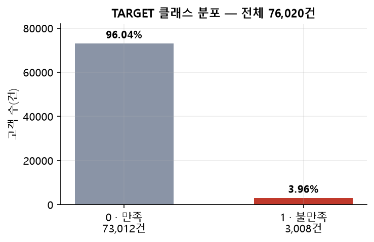
| TARGET | 건수 | 비율 |
|---|---|---|
| 0 · 만족 | 73,012 | 96.04% |
| 1 · 불만족 | 3,008 | 3.96% |
| 합계 | 76,020 | 100% |
만족과 불만족의 비율은 약 24 : 1이다. 모델 입장에서는 무조건 '만족'이라고 답하는 것이 가장 쉬운 전략이 된다.
이 데이터에서 정확도는 쓸 수 없다. 모든 고객을 만족으로 예측하는 무전략 모델도 정확도 96.04%를 얻기 때문이다. 정확도가 높다는 사실이 불만족 고객을 한 명이라도 찾아냈다는 뜻이 되지 못한다. 그래서 ROC-AUC와 재현율(Recall)을 주 지표로 채택했다.
| 지표 | 정의 | 이 문제에서 채택한 이유 |
|---|---|---|
| ROC-AUC | 임계값 전 구간에서 얻은 (재현율, 위양성률) 곡선의 아래 면적. | 임계값에 의존하지 않고 순위 능력만 평가하므로, 클래스가 한쪽으로 쏠려도 값이 부풀지 않는다. |
| 재현율(Recall) | 실제 불만족 고객 중 맞힌 비율. | 비용 구조가 비대칭이다. 놓치면 고객 이탈로 이어지지만 잘못 분류하면 응대 비용만 든다. 놓치는 쪽이 비싸므로 재현율을 우선한다. |
| 정밀도 · F1 | 불만족 예측 중 실제 비율 / 두 지표의 조화평균. | 재현율만 높이면 전체를 불만족으로 예측하는 극단으로 흐른다. 그 부작용을 감시한다. |
| 정확도(Accuracy) | 전체 중 맞힌 비율. | 참고용. 위 이유로 단독 판단 근거가 될 수 없다. |
지표를 숫자로만 두지 않고 다음 세 단계로 해석한다.
비교 기준이 없으면 0.8293이 좋은 값인지 알 수 없다. 무작위 예측(ROC-AUC 0.5)과 튜닝 전 기본 랜덤포레스트(ROC-AUC 0.7585), 두 기준선을 쓴다.
전처리는 세 단계로 진행했다. 값을 고치는 단계, 쓸모없는 컬럼을 지우는 단계, 중복을 지우는 단계다.
cust_df["var3"] = cust_df["var3"].replace(-999999, 2) cust_df.drop("ID", axis=1, inplace=True)
-999999를 2로 바꿨다.
2를 고른 이유는 var3에서 가장 많이 등장하는 값이기 때문이다.
최빈값으로 채우면 분포의 형태를 크게 흔들지 않는다.
이 치환을 하지 않으면 문제가 커진다.
거리 기반이나 선형 모델에서는 -999999 한 값이 스케일 전체를 지배한다.
트리 모델에서는 그 정도는 아니지만, 분기 기준이 이 값 하나를 떼어내는 데 낭비된다.
ID는 고객마다 다른 일련번호일 뿐이어서 학습에 넣으면 과적합의 원인이 되므로 제거했다.
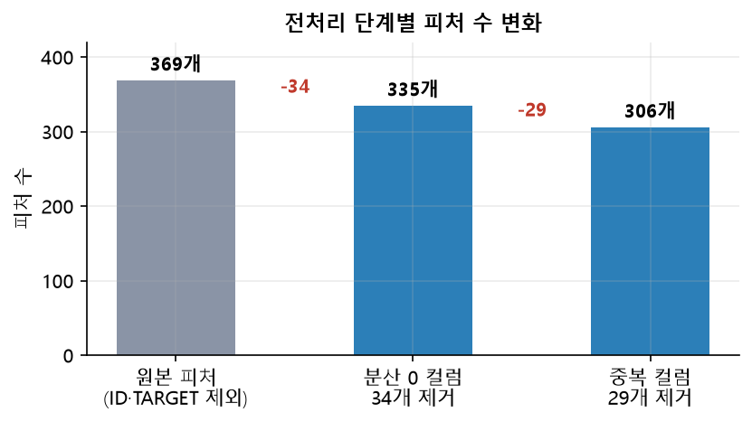
분산 0인 컬럼 34개와 완전 중복 컬럼 29개를 제거해 피처를 369개에서 306개로 줄였다. 전체의 17.1%가 사라졌지만 정보 손실은 원리적으로 없다. 상수 컬럼은 애초에 정보량이 0이고, 중복 컬럼은 남은 쌍이 같은 정보를 그대로 갖고 있기 때문이다.
어떤 전처리가 실제로 효과가 있었는지 확인하기 위해 조합을 바꿔가며 기본 랜덤포레스트로 측정했다. 아래는 노트북에 주석으로 남긴 실험 로그다.
| 전처리 조합 | 정확도 | ROC-AUC |
|---|---|---|
| 전처리 없음(원본) | 0.9571 | 0.7795 |
| var3 치환 + ID 제거 | 0.9521 | 0.7508 |
| var3 치환 + ID 제거 + 분산 0 제거 | 0.9526 | 0.7513 |
| 분산 0 제거만 | 0.9568 | 0.7800 |
| 분산 0 제거 + 중복 컬럼 제거 | 0.9569 | 0.7838 |
컬럼 제거는 ROC-AUC를 0.7795에서 0.7838로 0.0043만 올렸다. 전처리만으로는 성능이 크게 개선되지 않는다는 뜻이다. 다만 306개로 줄어든 피처는 학습 시간을 줄여, 뒤이은 GridSearchCV 탐색을 현실적인 시간 안에 끝낼 수 있게 했다. 전처리의 실질적 이득은 정확도보다 연산 비용 쪽에서 나왔다.
※ 위 값은 실험 당시 기록이며, 최종 실행 환경에서 재측정한 기본 랜덤포레스트의 ROC-AUC는 0.7585다.
이번 분석에서는 새로운 파생 피처를 만들지 않았다. 원본 306개 피처를 그대로 랜덤포레스트에 투입했다. 지어내지 않기 위해 분명히 적어 둔다. 아래 항목은 코드에서 수행하지 않은 작업이다.
| 담당자 | 모델 | var3 치환 | 분산0 제거 | 중복 제거 | 희소컬럼 제거 (≥99%) | var38 처리 | var15 파생 |
|---|---|---|---|---|---|---|---|
| 안성준 | 로지스틱 회귀 | O | O | O | O | 로그변환 | 플래그+구간화 |
| 정찬성 | LightGBM | O | O | O | O | 미확인 | 미확인 |
| 정영찬 | XGBoost | O | O | O | O | 최빈값 플래그 + 상위 2.5% 행 제거 | under_23 플래그 |
| 염윤호 (본 보고서) | 랜덤포레스트 | O | O | O | X | X | X |
| 이민석 | 5개 모델 비교 | O | O | O | O | 표준화만 | X |
랜덤포레스트는 결정 트리의 앙상블이다.
각 트리는 var15 < 23과 같은 분기를 스스로 찾아낸다.
사람이 var15_below_23이라는 플래그를 미리 만들어 주는 것과 비슷한 일을 학습 과정에서 수행한다.
또한 트리는 값의 크기가 아니라 순서만 보기 때문에 var38의 로그 변환에도 둔감하다.
로그 변환은 값의 순서를 바꾸지 않으므로 분기 지점이 달라지지 않는다.
다만 이는 '파생 피처가 필요 없다'는 주장이 아니라 '트리 모델에서는 효과가 작다'는 근거일 뿐이다. 실제로 이 조건에서 학습한 랜덤포레스트의 ROC-AUC는 0.8293으로, 파생 피처를 적용한 팀원의 XGBoost(0.8520)보다 낮다. 전처리 조건이 서로 다르므로, 이 차이가 모델 때문인지 피처 때문인지는 이 실험만으로 분리할 수 없다. 두 요인을 나누려면 전처리를 하나로 고정한 뒤 모델만 바꿔 다시 측정해야 한다.
다른 팀원들은 값의 99% 이상이 0인 희소 컬럼을 추가로 제거했다. 본 분석은 이를 적용하지 않아 피처 수가 306개로 상대적으로 많다. 희소 컬럼은 분기를 만들어도 한쪽에 거의 모든 샘플이 몰려 정보 이득이 낮다. 랜덤포레스트는 분기마다 피처를 무작위로 골라 쓰기 때문에, 이런 컬럼이 많으면 쓸모없는 후보를 뽑는 횟수가 늘어 트리 하나하나의 품질이 조금씩 떨어질 수 있다.
n_jobs=-1로 병렬화가 쉽다. 부스팅 계열은 순차 학습이라 이 이점이 없다.rf_clf = RandomForestClassifier(random_state=42) rf_clf.fit(X_train, y_train) # ROC-AUC : 0.7585 # 트리 500개, 2-겹 교차검증으로 안정성 확인 cross_val_score(rf_default, X_train, y_train, cv=2, scoring='roc_auc') # 0.7596 ± 0.0049
교차검증 편차가 ±0.0049로 작다. 데이터를 어떻게 나누든 비슷한 점수가 나온다는 뜻이므로, 이후 측정값을 신뢰할 수 있다.
params = {
'n_estimators': [500],
'max_depth': [28, 32, 40],
'min_samples_split': [22, 26, 30]
}
grid_cv = GridSearchCV(rf_clf, param_grid=params, scoring='roc_auc', cv=2, n_jobs=-1)
# 최적: {'max_depth': 28, 'min_samples_split': 30, 'n_estimators': 500}
# 최고 CV AUC: 0.8208
탐색 기준을 scoring='roc_auc'로 지정한 점이 중요하다.
기본값인 정확도로 탐색하면, 앞서 본 이유로 전부 만족이라 예측하는 모델이 최고점을 받는다.
| 파라미터 | 값을 올리면 | 값을 내리면 | 이 코드에서의 선택 |
|---|---|---|---|
n_estimators트리 개수 |
예측이 안정되고 분산이 준다. 시간은 개수에 비례해 늘어난다. | 빠르지만 트리마다 결과가 흔들린다. | 500으로 고정. 탐색에서 제외해 조합을 9개로 줄였다. |
max_depth트리 최대 깊이 |
잘게 나눠 정밀하게 맞춘다. 과적합 위험이 커진다. | 단순해져 과소적합으로 흐른다. | 28·32·40 중 가장 얕은 28 선택. 더 깊게 파도 이득이 없다는 신호다. |
min_samples_split분할 최소 샘플 수 |
샘플이 적은 노드를 나누지 않아 규제가 강해진다. | 소수 샘플까지 나눠 잡음을 학습한다. | 22·26·30 중 가장 큰 30 선택. 규제가 강할수록 좋았다. |
가장 얕은 깊이와 가장 강한 분할 제한이 동시에 선택됐다. 두 결과 모두 '모델을 더 단순하게 만들라'는 같은 신호다. 불만족 고객이 3.96%뿐이라, 복잡한 모델은 소수 사례를 외워버려 새 데이터에서 성능이 떨어진다.
탐색이 고른 최적값은 min_samples_split=30이었다.
그러나 최종 재학습 코드는 min_samples_split=22로 실행되어 있다.
본 보고서의 최종 성능(ROC-AUC 0.8293)은 실제로 실행된 max_depth=28, min_samples_split=22, n_estimators=500 기준이다.
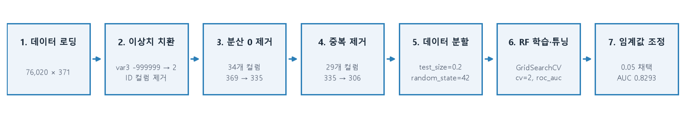
같은 데이터, 같은 분할, 같은 알고리즘에서 하이퍼파라미터만 바꿔 ROC-AUC가 0.7585에서 0.8293으로 올랐다. 전처리로 얻은 개선(0.0043)과 비교하면 16배 이상 큰 폭이다. 이 문제에서는 컬럼을 더 다듬는 것보다 모델의 복잡도를 조절하는 쪽이 훨씬 효과적이었다.
| 임계값 | 정확도 | 정밀도 | 재현율 | F1 | 혼동행렬 (TN / FP / FN / TP) |
|---|---|---|---|---|---|
| 0.01 | 0.3891 | 0.0595 | 0.9654 | 0.1120 | 5,330 / 9,267 / 21 / 586 |
| 0.05 | 0.8074 | 0.1333 | 0.6952 | 0.2238 | 11,854 / 2,743 / 185 / 422 |
| 0.10 | 0.8764 | 0.1646 | 0.5140 | 0.2493 | 13,013 / 1,584 / 295 / 312 |
| 0.20 | 0.9419 | 0.2172 | 0.1746 | 0.1936 | 14,215 / 382 / 501 / 106 |
| 0.30 | 0.9584 | 0.2727 | 0.0247 | 0.0453 | 14,557 / 40 / 592 / 15 |
| 0.39 | 0.9600 | 0.4000 | 0.0033 | 0.0065 | 14,594 / 3 / 605 / 2 |
붉은 행은 팀 공유 시트에 등록한 채택 임계값, 초록 행은 F1이 최대가 되는 지점이다. ROC-AUC는 임계값과 무관하게 0.8293으로 동일하다.
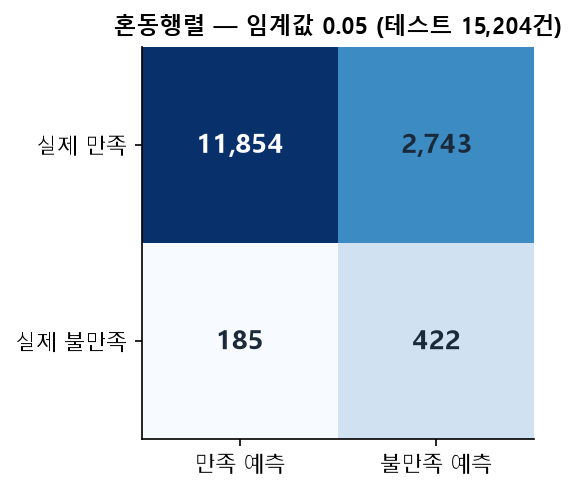
임계값 0.05에서의 혼동행렬이다. 테스트 15,204명 가운데 실제 불만족 고객은 607명이다. 이 중 422명을 잡아냈고 185명을 놓쳤다. 대신 만족 고객 2,743명을 불만족으로 잘못 분류했다.
기본 임계값 0.5를 그대로 썼다면 재현율은 0.0033까지 떨어진다. 607명 중 단 2명만 잡는 셈이라 모델을 쓰는 의미가 사라진다.
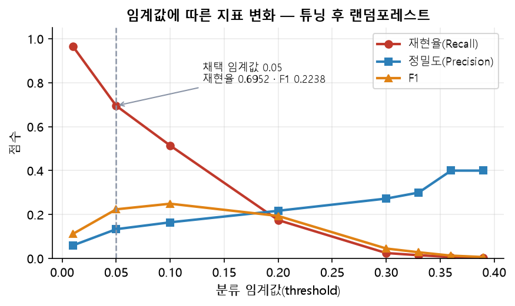
세 곡선이 교차하는 모양이 이 문제의 성격을 그대로 보여 준다. 임계값을 올리면 정밀도는 0.0595에서 0.4000까지 오르지만, 재현율은 0.9654에서 0.0033으로 무너진다. 두 지표를 동시에 만족시키는 지점은 존재하지 않는다.
불만족 고객 한 명을 놓쳤을 때의 손실과, 만족 고객에게 헛되이 연락했을 때의 비용을 비교해 임계값을 정해야 한다.
| 임계값 | 잡는 불만족 고객 | 놓치는 고객 | 불필요한 연락 | 어떤 상황에 맞는가 |
|---|---|---|---|---|
| 0.01 | 586명 / 607명 | 21명 | 9,267명 | 이탈 손실이 압도적으로 클 때. 다만 테스트 인원의 약 65%에게 연락해야 한다. |
| 0.05 | 422명 / 607명 | 185명 | 2,743명 | 연락 대상을 전체의 약 21%로 줄이면서 3분의 2 이상을 잡는 균형점. |
| 0.10 | 312명 / 607명 | 295명 | 1,584명 | 응대 인력이 제한적일 때. F1은 0.2493으로 이 지점이 가장 높다. |
| 0.20 | 106명 / 607명 | 501명 | 382명 | 연락 정확도를 우선할 때. 대신 82%의 불만족 고객을 놓친다. |
임계값 0.05를 택한다는 것은 이런 뜻이다. "고객 15,204명 중 3,165명에게 사전 관리 연락을 돌린다. 그중 422명이 실제 불만족 고객이고, 2,743명은 이미 만족한 고객이다. 연락 100건당 13건이 실제 위험 고객이며, 전체 불만족 고객의 69.5%를 사전에 접촉하게 된다."
정밀도 0.1333이 낮아 보이지만 기준선과 비교하면 다르게 읽힌다. 무작위로 3,165명을 골랐다면 그중 불만족 고객은 3.96%인 125명 정도다. 모델은 같은 인원으로 422명을 찾아내므로 무작위 대비 약 3.4배 효율적이다.
ROC-AUC 0.8293의 의미도 함께 짚는다. 불만족 고객 한 명과 만족 고객 한 명을 임의로 뽑았을 때, 모델이 불만족 고객에게 더 높은 확률을 부여할 가능성이 82.93%라는 뜻이다. 무작위 예측이라면 50%이므로, 순위를 매기는 능력 자체는 확보했다고 판단할 수 있다.
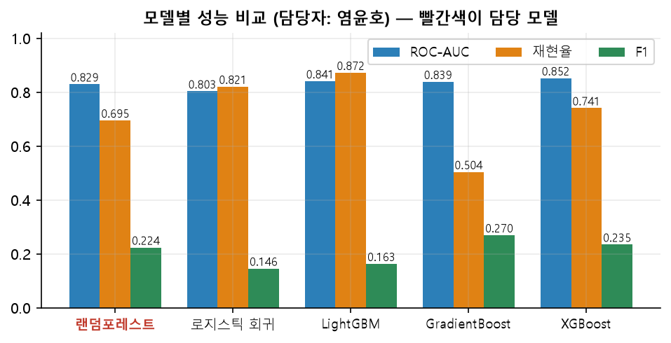
| 모델 | 정확도 | ROC-AUC | 재현율 | F1 | 비고 |
|---|---|---|---|---|---|
| 랜덤포레스트 (담당) | 0.8074 | 0.8293 | 0.6952 | 0.2238 | 임계값 0.05 |
| XGBoost | 0.8086 | 0.8520 | 0.7409 | 0.2346 | 임계값 0.05 |
| LightGBM | 0.6267 | 0.8408 | 0.8722 | 0.1631 | — |
| GradientBoost | 0.8909 | 0.8386 | 0.5041 | 0.2695 | 임계값 0.1 |
| 로지스틱 회귀 | 0.6191 | 0.8032 | 0.8206 | 0.1457 | — |
ROC-AUC 기준으로 랜덤포레스트(0.8293)는 5개 중 4위다. 상위 세 자리를 부스팅 계열(XGBoost 0.8520, LightGBM 0.8408, GradientBoost 0.8386)이 차지했다. 이 순서는 우연이라기보다 두 계열의 학습 방식 차이로 설명된다.
LightGBM은 재현율 0.8722로 1위지만 정확도가 0.6267에 그친다. 많이 잡는 대신 그만큼 많이 틀렸다는 뜻이며, F1은 0.1631로 오히려 최하위권이다. GradientBoost는 반대로 F1 0.2695로 1위지만 재현율은 0.5041로 절반 수준이다. 어떤 모델이 가장 좋은가라는 질문은 어떤 지표를 볼 것인가를 정한 뒤에야 답할 수 있다.
사기 거래가 0.173%뿐인 극단적 불균형 데이터에서 사기를 탐지하는 이진 분류 문제 · 담당 모델: LightGBM
신용카드 거래 한 건마다 30개의 수치형 변수가 주어진다.
목표는 그 거래가 사기인지(Class=1) 정상인지(Class=0)를 판별하는 것이다.
Santander와 같은 이진 분류지만 불균형의 정도가 훨씬 심하다.
Santander의 소수 클래스가 3.96%인 데 비해 이 데이터는 0.173%다.
| 구분 | 컬럼 | 설명 | 개수 |
|---|---|---|---|
| 시간 | Time | 첫 거래로부터 경과한 초. 0 ~ 172,792초(약 48시간) 범위다. | 1 |
| PCA 변환 변수 | V1 ~ V28 |
개인정보 보호를 위해 원본 거래 정보를 주성분분석으로 변환한 값. 각 변수의 실제 의미는 공개되지 않았다. | 28 |
| 거래 금액 | Amount | 결제 금액. 유일하게 원본 스케일이 유지된 변수다. | 1 |
| 목표 변수 | Class | 0 = 정상, 1 = 사기 | 1 |
| 합계 | 31 | ||
출처: 02_Creditcard.ipynb — RangeIndex: 284807 entries, Data columns (total 31 columns)
| 변수 | 평균 | 표준편차 | 중앙값 | 최솟값 | 최댓값 |
|---|---|---|---|---|---|
Time | 94,813.86 | 47,488.15 | 84,692.00 | 0.00 | 172,792.00 |
Amount | 88.35 | 250.12 | 22.00 | 0.00 | 25,691.16 |
Class | 0.001727 | 0.041527 | 0.00 | 0.00 | 1.00 |
V1~V28 | ≈ 0 | 0.33 ~ 1.96 | ≈ 0 | −113.74 | 120.59 |
첫째, V1~V28의 평균이 모두 0에 가깝다. PCA 변환 과정에서 중심화가 이미 이루어진 결과다.
이 변수들은 추가 스케일링이 필요 없다.
둘째, Amount만 스케일이 완전히 다르다. 평균 88.35에 최댓값 25,691.16으로, 평균의 290배에 달하는 값이 존재한다.
표준편차(250.12)가 평균(88.35)의 세 배에 가깝고 중앙값(22.00)이 평균보다 훨씬 작다.
전형적인 오른쪽으로 긴 꼬리 분포이며, 이것이 뒤에서 로그 변환을 적용하는 근거가 된다.
셋째, Class의 평균이 0.001727이다. 0과 1로만 이루어진 변수의 평균은 곧 1의 비율이므로, 사기 거래 비율이 0.1727%임을 이 한 줄로 확인할 수 있다.
card_df.isna().sum().sum()
# np.int64(0)
전체 셀을 통틀어 결측치는 0건이다.
Santander와 달리 -999999 같은 대체값 흔적도 보이지 않는다.
V1~V28은 PCA 결과이므로 결측이 있었다면 변환 자체가 불가능했을 것이다.
변수명이 V1부터 V28까지 순번으로만 붙어 있다.
이름에서 얻을 수 있는 정보가 없다는 점이 이 데이터의 가장 큰 제약이다.
Santander는 접두어로 변수 그룹을 나눌 수 있었지만, 여기서는 그런 단서가 없다.
V1~V28은 상호 상관이 0에 가깝다. 따라서 Santander에서 했던 중복 컬럼 탐색이 여기서는 의미가 없다.V1 1.96에서 V28 0.33으로 단조 감소한다.card_df.describe().loc["std", :].unique() # array([4.74e+04, 1.95e+00, ..., 3.30e-01, 2.50e+02, 4.15e-02])
표준편차의 고유값 목록에 0이 포함되어 있지 않다. 즉 모든 행이 같은 값을 갖는 상수 컬럼은 존재하지 않는다. Santander에서 34개를 제거해야 했던 것과 달리, 이 데이터에서는 제거 대상이 없다.
완전히 동일한 값을 갖는 컬럼 쌍을 찾는 검사는 이 분석에서 수행하지 않았다.
다만 3.1.4에서 설명했듯 V1~V28은 서로 직교하도록 만들어진 주성분이므로,
두 컬럼의 값이 완전히 일치할 가능성은 원리적으로 매우 낮다.
검사하지 않은 상태이므로 '중복이 없다'가 아니라 '확인하지 않았다'로 기록한다.
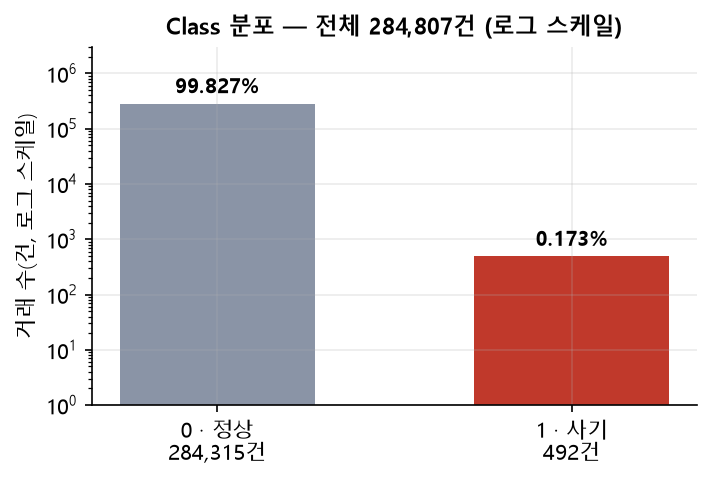
| Class | 건수 | 비율 |
|---|---|---|
| 0 · 정상 | 284,315 | 99.827% |
| 1 · 사기 | 492 | 0.173% |
| 합계 | 284,807 | 100% |
정상과 사기의 비율은 약 578 : 1이다. 막대 높이 차이가 너무 커서 일반 축으로는 사기 막대가 보이지 않으므로 로그 축으로 그렸다.
이 데이터에서 정확도의 무용함은 Santander보다 훨씬 극단적이다. 모든 거래를 정상으로 예측하면 정확도가 99.827%가 된다. 사기를 단 한 건도 잡지 못하는 모델이 99.8점을 받는 셈이다.
| 지표 | 정의 | 이 문제에서의 역할 |
|---|---|---|
| 재현율(Recall) | 실제 사기 중 잡아낸 비율 | 놓친 사기는 그대로 금전 손실이 된다. 가장 먼저 봐야 할 지표다. |
| F1-Score | 정밀도와 재현율의 조화평균 | 재현율만 보면 전부 사기로 예측하는 모델이 1등이 된다. 오탐까지 함께 벌하는 F1으로 균형을 확인한다. |
| ROC-AUC | 임계값 전 구간의 순위 능력 | 모델의 기본 판별력을 본다. 다만 아래 설명처럼 이 데이터에서는 값이 낙관적으로 나온다. |
| AUPRC (average precision) | 정밀도-재현율 곡선의 아래 면적 | 하이퍼파라미터 탐색 기준으로 채택했다. 임계값에 의존하지 않으면서도 소수 클래스에 민감하다. |
ROC 곡선의 가로축은 위양성률(FP / 실제 음성 전체)이고, 이 데이터의 실제 음성은 284,315건이다. 오탐이 1,000건 발생해도 위양성률은 0.0035에 그쳐 곡선이 거의 움직이지 않는다. 그래서 오탐이 많은 모델도 ROC-AUC가 0.97 이상으로 나온다.
AUPRC의 가로축은 재현율, 세로축은 정밀도다. 정밀도의 분모가 '사기로 예측한 건수'이므로 오탐이 늘면 곧바로 값이 떨어진다. 실제로 언더샘플링 LightGBM은 ROC-AUC 0.9777로 높지만 AUPRC는 0.6689다. 두 지표가 어긋날 때는 AUPRC가 실제 성능에 가깝다.
def get_preprocessed_df(df=None):
df_copy = df.copy()
amount_n = np.log1p(df_copy['Amount'])
df_copy.insert(0, 'Amount_Scaled', amount_n)
df_copy.drop(['Time', 'Amount'], axis=1, inplace=True)
return df_copy
Amount에 log1p를 적용해 Amount_Scaled를 만들고 원본은 지웠다.
log1p는 log(x+1)이다.
금액이 0원인 거래가 실제로 존재하므로(최솟값 0.00), 그냥 log를 쓰면 음의 무한대가 되어 학습이 불가능하다.
1을 더하는 것은 이 문제를 피하기 위한 장치다.
변환 효과는 스케일 압축이다.
0 ~ 25,691이던 범위가 0 ~ 약 10.15로 줄어, V1~V28과 비슷한 크기가 된다.
Time은 제거했다. 첫 거래로부터의 경과 초일 뿐이라 사기 여부와 직접적인 관계를 기대하기 어렵고,
47,488이라는 큰 표준편차만 모델에 부담을 준다.
train_test_split(X_features, y_target, test_size=0.3,
random_state=42, stratify=y_target)
stratify=y_target이 이 문제에서는 필수다.
사기가 492건뿐이라 무작위로 나누면 학습셋과 테스트셋의 사기 비율이 크게 흔들릴 수 있다.
층화 분할은 원본의 클래스 비율을 양쪽에 그대로 유지시킨다.
그 결과 학습셋 199,362건, 테스트셋 85,442건으로 나뉘었고 테스트셋의 사기는 147건이다.
팀 EDA에서 Class와의 상관이 가장 큰 변수로 V14가 지목됐다.
사기 거래에 해당하는 V14 값만 모아 사분위수를 구하고, IQR의 1.5배를 벗어나는 행을 제거했다.
quantile_25 = np.percentile(fraud.values, 25) quantile_75 = np.percentile(fraud.values, 75) iqr_weight = (quantile_75 - quantile_25) * 1.5 outlier_index = fraud[(fraud < q25 - iqr_weight) | (fraud > q75 + iqr_weight)].index # 원본 전체 기준 이상치 인덱스: [8296, 8615, 9035, 9252]
weight 값 | 동작 | 위험 |
|---|---|---|
| 1.5 (채택) | 사분위 범위의 1.5배 밖을 이상치로 본다. 통계에서 쓰는 관례값이다. | — |
| 값을 낮추면 (예: 1.0) | 제거 범위가 넓어져 더 많은 행이 사라진다. | 492건뿐인 사기 표본이 더 줄어 학습 신호가 약해진다. |
| 값을 높이면 (예: 3.0) | 극단값만 제거한다. | 잡음이 남아 결정 경계가 흔들린다. |
이상치 제거를 학습셋과 테스트셋 양쪽에 적용했다. 학습셋에 적용하는 것은 문제가 없다. 잡음을 빼고 배우겠다는 의도다. 그러나 테스트셋에서도 이상치를 제거하면, 평가 대상이 실제 운영 환경보다 다루기 쉬운 데이터로 바뀐다. 실제 서비스에서는 이상치를 미리 골라낼 수 없기 때문이다. 따라서 본 보고서의 성능 수치는 이상치가 제거된 테스트셋 기준임을 함께 밝힌다.
최종 학습에 쓰인 피처는 29개다.
Amount_Scaled 1개와 V1~V28 28개다.
원본 31개에서 Time과 Amount가 빠지고 Amount_Scaled가 더해진 결과다.
| 단계 | 작업 | 피처 수 |
|---|---|---|
| 원본 | Time + V1~V28 + Amount + Class | 31 |
| 파생 | Amount_Scaled = log1p(Amount) 추가 | 32 |
| 제거 | Time, Amount 삭제 | 30 |
| 학습 입력 | Class를 목표 변수로 분리 | 29 |
새로 만든 파생 피처는 Amount_Scaled 하나뿐이다.
3.1.4에서 설명한 대로 V1~V28의 의미를 알 수 없어 변수 조합을 설계할 근거가 없기 때문이다.
이 데이터에서 성능을 좌우하는 것은 피처 설계가 아니라 불균형을 어떻게 다루느냐였다.
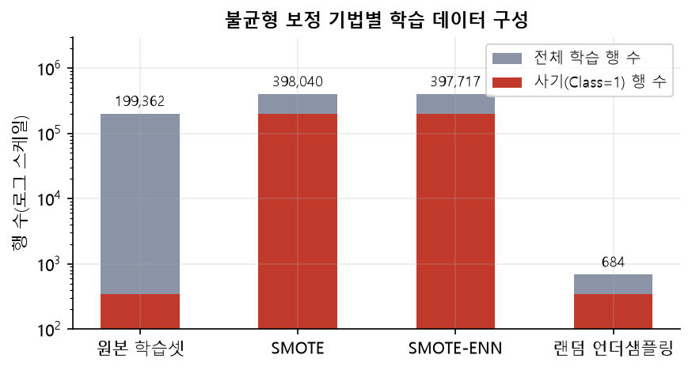
| 기법 | 방식 | 학습 행 수 | 사기 행 수 |
|---|---|---|---|
| 원본 | 보정 없음 | 199,362 | 342 |
| SMOTE | 소수 클래스 샘플 사이를 보간해 새 데이터를 합성한다. | 398,040 | 199,020 |
| SMOTE-ENN | SMOTE로 늘린 뒤, 이웃과 클래스가 어긋나는 샘플을 제거해 경계를 정리한다. | 397,717 | 199,020 |
| 랜덤 언더샘플링 | 다수 클래스를 소수 클래스 수만큼 무작위로 줄인다. | 684 | 342 |
언더샘플링은 199,362건이던 학습 데이터를 684건으로 줄인다. 정상 거래의 99.8%를 버리는 셈이다. 클래스 비율은 1:1로 맞춰지지만, 정상 거래가 어떤 모습인지 배울 기회를 대부분 잃는다. 그 결과가 뒤의 표 3-2에서 정밀도 0.0478로 나타난다.
lgbm_clf = LGBMClassifier(n_estimators=1000, num_leaves=64,
n_jobs=-1, boost_from_average=False)
boost_from_average=False가 이 문제에서 특히 중요하다.
기본값 True는 초기 예측값을 레이블의 평균에서 시작한다.
사기 비율이 0.0017이므로 시작점이 거의 0에 붙어 있어, 부스팅이 그 지점을 빠져나오는 데 많은 트리를 낭비한다.
False로 두면 0에서 시작해 소수 클래스 방향으로 더 빨리 이동한다.
smote_pipeline = ImbPipeline([
('sampler', SMOTE(random_state=42)),
('classifier', LGBMClassifier(n_estimators=1000, n_jobs=1, boost_from_average=False))
])
param_grid = {
'classifier__num_leaves': [31, 64],
'classifier__max_depth': [-1, 7],
'classifier__learning_rate': [0.05, 0.1]
}
cv = StratifiedKFold(n_splits=5, shuffle=True, random_state=42)
GridSearchCV(smote_pipeline, param_grid, cv=cv, scoring='average_precision', n_jobs=-1)
# Best Params: {'learning_rate': 0.05, 'max_depth': -1, 'num_leaves': 64}
# Best CV AUPRC: 0.8673
SMOTE를 교차검증 바깥에서 먼저 적용하면 심각한 문제가 생긴다. 합성된 샘플은 원본 샘플들을 보간해 만들어진다. 따라서 어떤 원본 샘플로부터 만들어진 합성 샘플이 학습 폴드에, 그 원본이 검증 폴드에 들어갈 수 있다. 모델은 사실상 정답을 미리 본 상태로 평가받게 되고, 점수가 실제보다 높게 나온다.
ImbPipeline으로 감싸면 SMOTE가 매 폴드의 학습 부분에만 적용된다.
검증 폴드는 원본 그대로 남아 평가의 신뢰성이 지켜진다.
| 파라미터 | 값을 올리면 | 값을 내리면 | 선택된 값 |
|---|---|---|---|
num_leaves리프 개수 |
한 트리가 더 많은 규칙을 담아 표현력이 커진다. 과적합 위험도 함께 커진다. | 단순해져 미세한 패턴을 놓친다. | 64 — 31보다 복잡한 쪽이 선택됐다. 소수 클래스 경계가 단순하지 않다는 뜻이다. |
max_depth최대 깊이 |
깊은 상호작용을 학습한다. | 얕게 제한해 규제를 건다. | -1 (무제한) — 깊이 제한 7보다 나았다. 대신 num_leaves가 복잡도를 통제한다. |
learning_rate학습률 |
적은 트리로 빠르게 수렴하지만 최적점을 지나칠 수 있다. | 한 걸음이 작아져 더 정교하게 수렴한다. 필요한 트리 수가 늘어난다. | 0.05 — 낮은 쪽이 선택됐다. n_estimators=1000이 충분히 커서 작은 보폭을 감당할 수 있었다. |
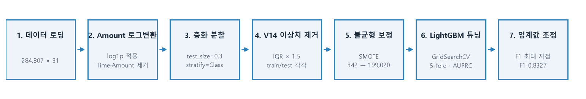
(1) 보정 기법 선택 — 같은 LightGBM으로 세 기법 비교
| 보정 기법 | 정확도 | 정밀도 | 재현율 | F1 | ROC-AUC | AUPRC |
|---|---|---|---|---|---|---|
| 언더샘플링 | 0.9695 | 0.0478 | 0.8844 | 0.0906 | 0.9777 | 0.6689 |
| SMOTE | 0.9994 | 0.8731 | 0.7959 | 0.8327 | 0.9697 | 0.8274 |
| SMOTE-ENN | 0.9992 | 0.7453 | 0.8163 | 0.7792 | 0.9739 | 0.8059 |
언더샘플링은 재현율 0.8844로 가장 높지만 정밀도가 0.0478에 불과하다. 사기라고 예측한 것 100건 중 5건만 실제 사기라는 뜻이다. F1은 0.0906으로 SMOTE의 9분의 1 수준이다. ROC-AUC만 보면 0.9777로 가장 높아 보이지만, 3.2.1에서 설명한 대로 이 지표는 오탐에 둔감하다. AUPRC로 보면 0.6689 대 0.8274로 SMOTE가 명확히 앞선다.
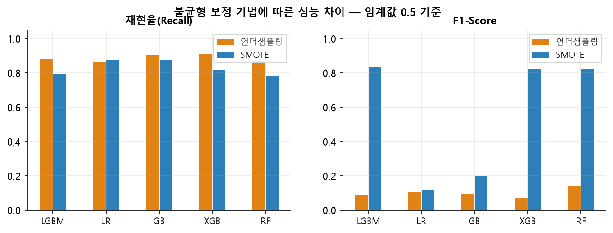
그림 3-4를 보면 이 현상이 LightGBM만의 일이 아님을 알 수 있다. 언더샘플링은 다섯 모델 모두 재현율이 0.86~0.91로 높지만, F1은 전부 0.14 이하다. 학습 데이터를 684건으로 줄인 대가가 모든 모델에 동일하게 나타났다.
(2) 임계값 조정
기본 임계값 0.5에서 로지스틱 회귀와 GradientBoosting의 F1이 각각 0.1138, 0.1983으로 낮게 나왔다.
precision_recall_curve로 임계값을 훑어 F1이 최대가 되는 지점을 찾아 재평가했다.
| 모델 | 최적 임계값 | F1 (0.5 기준) | F1 (조정 후) | 개선폭 |
|---|---|---|---|---|
| 로지스틱 회귀 | 1.0000 | 0.1138 | 0.8058 | +0.6920 |
| GradientBoosting | 0.9844 | 0.1983 | 0.7855 | +0.5872 |
| LightGBM (담당) | 0.5 유지 | 0.8327 | 0.8327 | — |
로지스틱 회귀는 임계값 조정만으로 F1이 0.1138에서 0.8058로 뛴다. 모델의 판별력 자체는 이미 충분했지만, 출력 확률이 전반적으로 부풀어 있어 0.5 기준으로는 정상 거래까지 사기로 넘겼던 것이다. SMOTE로 사기 비율을 50%까지 올려 학습했으니 확률이 과대 추정되는 것은 예견된 결과다.
반대로 LightGBM은 0.5에서 이미 F1 0.8327로 최고 수준이라 조정이 필요 없었다. 확률 보정이 잘 되어 있는 모델일수록 임계값 조정의 이득이 작다.
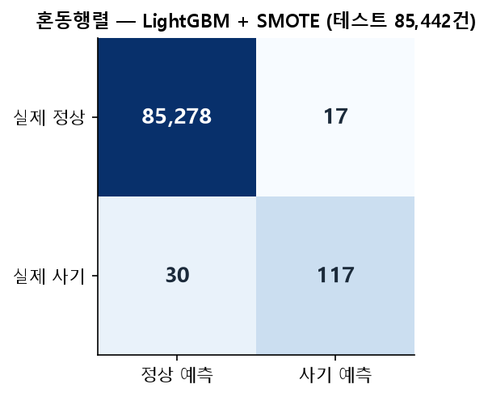
"카드 거래 85,442건을 심사했다. 사기로 판정해 차단한 것은 134건이고, 그중 117건이 실제 사기였다. 정상 고객 17명이 결제를 잘못 막혀 불편을 겪었다. 실제 사기 147건 중 30건은 걸러내지 못하고 통과시켰다."
정밀도 0.8731의 의미가 여기서 드러난다. 차단 100건당 87건이 진짜 사기이므로, 고객 불만이 발생하는 비율은 13%다. 언더샘플링 모델(정밀도 0.0478)이었다면 차단 100건 중 95건이 정상 고객이었을 것이다. 같은 재현율을 좇더라도 어떤 보정 기법을 쓰느냐가 고객 경험을 완전히 갈라놓는다.
놓친 30건에 대한 판단도 필요하다.
Amount의 중앙값이 22.00, 평균이 88.35이므로 사기 한 건의 평균 피해 규모를 88달러 수준으로 가정하면,
30건을 놓친 손실은 약 2,650달러 규모로 환산된다.
반면 오탐 17건은 결제 실패에 따른 고객 응대 비용으로 이어진다.
두 비용의 크기를 비교해 임계값을 다시 정할 수 있으며, 이때 표 3-4의 곡선이 판단 근거가 된다.
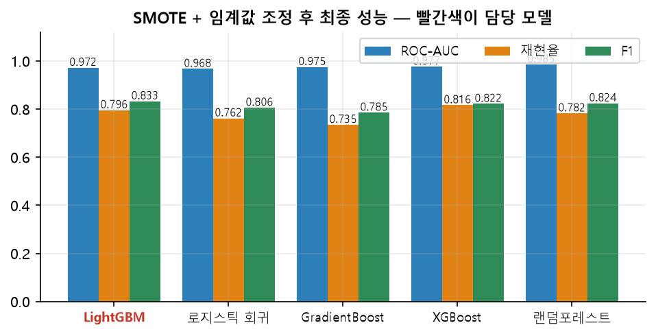
| 모델 | 정확도 | ROC-AUC | 재현율 | F1 |
|---|---|---|---|---|
| LightGBM (담당) | 0.9994 | 0.9720 | 0.7959 | 0.8327 |
| 랜덤포레스트 | 0.9994 | 0.9854 | 0.7823 | 0.8244 |
| XGBoost | 0.9994 | 0.9771 | 0.8163 | 0.8219 |
| 로지스틱 회귀 | 0.9994 | 0.9675 | 0.7619 | 0.8058 |
| GradientBoosting | 0.9993 | 0.9749 | 0.7347 | 0.7855 |
담당 모델인 LightGBM이 F1 0.8327로 1위다. 반면 ROC-AUC는 0.9720으로 랜덤포레스트(0.9854)에 뒤진다. 두 지표의 순위가 어긋나는 이유를 나눠 설명한다.
learning_rate=0.05라는 작은 보폭으로 1,000개 트리를 쌓은 것도 경계를 과하게 밀어붙이지 않게 하는 데 기여했다.n_estimators 기본값이 100이다.
다른 부스팅 모델(1,000그루)보다 학습량이 훨씬 적어 소수 클래스 경계를 충분히 다듬지 못했다.다섯 모델의 정확도는 0.9993 ~ 0.9994로 사실상 동일하다. 소수점 넷째 자리까지 같은 이 수치만 보면 모든 모델이 똑같이 좋아 보인다. 그러나 F1은 0.7855에서 0.8327까지 벌어져 있다. 불균형 데이터에서 정확도를 보고하면 모델 간 차이가 통째로 지워진다.
리뷰 텍스트를 벡터화하고 군집화해 의미 있는 리뷰 그룹을 도출하는 비지도 학습 문제
본 장은 추후 추가 예정이다.
해당 데이터셋은 아직 분석에 착수하지 않았다.
분석을 수행하지 않은 상태에서 수치나 해석을 기재하지 않기 위해 본문을 비워 둔다.
참고: 팀 공유 시트 「03 문서 군집화」에도 현재 '착수 전'으로 기록되어 있다.
148만 건의 중고 상품 텍스트로 적정 판매가를 예측하는 회귀 문제 · 담당 모델: LinearRegression 계열
중고 거래 플랫폼에 등록된 상품의 이름·설명·브랜드·카테고리·상태·배송 조건이 주어진다.
목표는 그 상품의 판매 가격(price)을 맞히는 것이다.
정답이 연속적인 실수값이므로 분류가 아닌 회귀(Regression) 문제다.
앞의 두 주제와 달리 입력의 절반 이상이 자연어 텍스트라는 점이 가장 큰 차이다.
| # | 컬럼명 | 설명 | 타입 |
|---|---|---|---|
| 1 | name | 상품명. 짧은 자유 텍스트다. | Text |
| 2 | item_condition_id | 판매자가 매긴 상품 상태 등급. 1 ~ 5의 순서형 범주다. | Ordinal |
| 3 | category_name | 대/중/소 분류가 슬래시(/)로 결합된 문자열. | Text / Cat |
| 4 | brand_name | 브랜드명. 결측이 632,682건으로 가장 많다. | Categorical |
| 5 | shipping | 배송비 부담 주체. 1 = 판매자 부담, 0 = 구매자 부담. | Binary |
| 6 | item_description | 상품 상세 설명. 길이가 긴 자유 텍스트다. | Text |
| 7 | train_id | 행 식별자. 예측 정보가 없어 사용하지 않는다. | ID |
| — | price | 예측 대상 종속변수 (단위: 달러) | Target |
| 변수 | 값 분포 |
|---|---|
shipping | 0(구매자 부담) 819,435건 · 1(판매자 부담) 663,100건 — 약 55 : 45로 비교적 균일하다. |
item_condition_id | 1등급 640,549 · 3등급 432,161 · 2등급 375,479 · 4등급 31,962 · 5등급 2,384 — 1~3등급이 전체의 97.7%다. |
cat_dae (대분류) | Women 664,385 · Beauty 207,828 · Kids 171,689 · Electronics 122,690 · Men 93,680 등 11종. Women이 44.8%로 편중돼 있다. |
cat_jung (중분류) | 114종 |
cat_so (소분류) | 871종 |
상태 등급 4·5는 합쳐도 34,346건으로 전체의 2.3%에 불과하다. 표본이 적은 등급은 회귀 계수 추정이 불안정해질 수 있다는 점을 미리 염두에 둔다.
| 컬럼 | non-null | 결측 건수 | 비율 | 처리 필요성 |
|---|---|---|---|---|
brand_name | 849,853 | 632,682 | 42.68% | 매우 높음 — 별도 보완 전략이 필요하다. |
category_name | 1,476,208 | 6,327 | 0.43% | 낮음 — 대체값으로 채운다. |
item_description | 1,482,529 | 6 | <0.01% | 무시 가능 |
| 그 외 5개 컬럼 | 1,482,535 | 0 | 0% | — |
item_description의 실제 NaN은 6건뿐이지만, 팀 EDA에서 별도의 문제가 확인됐다.
설명란에 "No description yet"이라는 안내 문구가 그대로 들어간 행이 82,489건 존재한다.
형식상 값은 있지만 정보량은 결측과 다르지 않다.
isnull()만으로는 이런 유형을 잡아낼 수 없다.
출처: total_result.xlsx 「04 마켓 가격 예측 · 2. EDA 주요 발견 사항」
앞의 두 데이터셋과 달리 컬럼명이 익명화되어 있지 않다.
이름만으로 각 변수의 의미를 알 수 있어 도메인 지식을 직접 적용할 수 있다.
구조적으로 눈여겨볼 점은 category_name이다.
Women/Tops & Blouses/Blouse Electronics/Computers & Tablets/Components & Parts
하나의 문자열 안에 대·중·소 세 단계가 슬래시로 묶여 있다.
이대로 두면 Women/Tops & Blouses/Blouse와 Women/Tops & Blouses/Tank가
완전히 다른 범주로 취급되어, 둘 다 Women 카테고리라는 정보가 사라진다.
따라서 분할이 필요하다.
분산이 0인 컬럼 탐색과 완전 중복 컬럼 탐색은 이 분석에서 수행하지 않았다.
원본 컬럼이 8개뿐이고 그중 4개가 자유 텍스트여서, 컬럼 단위의 상수·중복 검사가 적용될 대상이 아니기 때문이다.
다만 벡터화 단계에서 유사한 목적의 처리를 수행했다.
CountVectorizer(min_df=2)는 한 문서에만 등장하는 단어를 피처에서 제외하는데,
이는 사실상 정보량이 거의 없는 열을 걸러내는 역할을 한다(5.4.1 참조).
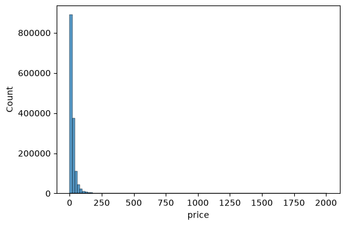
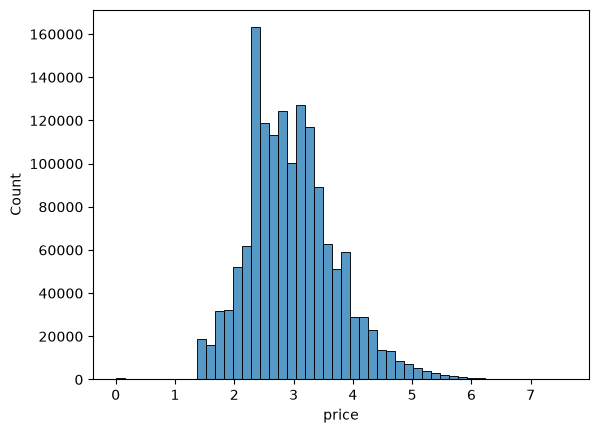
변환 전에는 대부분의 상품이 왼쪽 끝에 몰려 있고 오른쪽으로 긴 꼬리가 이어진다.
소수의 고가 상품이 축 전체를 늘려 놓아 저가 구간의 구조가 보이지 않는다.
log1p를 적용하면 종 모양에 가까운 분포로 바뀐다.
이 형태가 선형 회귀의 가정에 훨씬 가깝다.
이 문제의 평가 지표는 RMSLE(Root Mean Squared Logarithmic Error)다.
def rmsle(y, y_pred):
return np.sqrt(np.mean(np.power(np.log1p(y) - np.log1p(y_pred), 2)))
def evaluate_org_price(y_test, preds):
# 학습은 log1p(price)로 했으므로 expm1으로 원래 달러 단위를 복원한 뒤 계산
return rmsle(np.expm1(y_test), np.expm1(preds))
실제 가격과 예측 가격에 각각 로그를 취한 뒤, 그 차이를 제곱해 평균 내고 제곱근을 씌운다.
가격이 0일 때 로그가 정의되지 않으므로 항상 1을 더한다(log1p).
① 절대 오차가 아니라 비율 오차를 평가한다
| 상황 | 실제 가격 | 예측 가격 | 절대 오차 | 배율 오차 | RMSE의 평가 |
|---|---|---|---|---|---|
| A — 저가 상품 | $10 | $20 | $10 | 2.00배 | 오차 $10 |
| B — 고가 상품 | $100 | $110 | $10 | 1.10배 | 오차 $10 (동일) |
일반 RMSE는 두 상황을 똑같이 취급한다. 그러나 10달러짜리를 20달러로 부르는 것은 2배 틀린 것이고, 100달러짜리를 110달러로 부르는 것은 10% 틀린 것이다. RMSLE는 로그를 취해 A를 B보다 훨씬 크게 벌한다.
② 낮게 예측했을 때 더 큰 벌점을 준다
ln(101) − ln(51) ≈ 0.683이다.ln(151) − ln(101) ≈ 0.402다.같은 50달러 차이지만 낮게 예측한 쪽의 벌점이 약 1.7배 크다. 판매자에게 지나치게 낮은 가격을 추천하면 손해와 이탈로 이어지므로, 이 비대칭성은 바람직한 성질이다.
item_description을 넣었을 때와 뺐을 때의 RMSLE를 비교해 텍스트 설명의 가치를 수치화한다.alpha를 바꿔가며 RMSLE 곡선을 그려 최적 지점을 찾는다.mercari_df['price'] = np.log1p(mercari_df['price']) # 10.0 → 2.397895, 52.0 → 3.970292
학습 목표를 price가 아니라 log1p(price)로 바꿨다.
평가 지표가 RMSLE, 즉 로그 공간의 오차이므로 학습도 같은 공간에서 하는 것이 자연스럽다.
학습 목표와 평가 기준을 일치시키는 조치다.
예측 후에는 expm1으로 달러 단위를 복원한 뒤 RMSLE를 계산한다.
def split_cat(category_name):
try:
return category_name.split('/')
except:
return ['Other_Null', 'Other_Null', 'Other_Null']
mercari_df['cat_dae'], mercari_df['cat_jung'], mercari_df['cat_so'] = \
zip(*mercari_df['category_name'].apply(lambda x: split_cat(x)))
슬래시로 묶여 있던 하나의 문자열을 세 개의 컬럼으로 나눴다.
try / except로 결측(NaN)을 함께 처리한 점이 실용적이다.
NaN에 .split()을 호출하면 오류가 나는데, 이를 잡아 Other_Null 세 개로 채운다.
결측 처리와 분할을 한 번의 순회로 끝내는 구조다.
분할 결과 대분류 11종, 중분류 114종, 소분류 871종이 만들어졌다.
이제 Women/Tops & Blouses/Blouse와 Women/Dresses/Above Knee가
'Women'이라는 정보를 공유하게 된다.
brand_name 결측이 632,682건, 전체의 42.68%다.
이 규모를 전부 Other_Null로 채우면 데이터의 40% 이상이 같은 값을 갖게 되어 브랜드 변수의 변별력이 크게 떨어진다.
그래서 상품명에서 브랜드를 되찾아오는 단계를 먼저 넣었다.
known_brands = set(mercari_df.loc[mercari_df['brand_name'].notnull(), 'brand_name'].unique()) def find_brand_in_name(name, brand_set): words = str(name).split() for size in (3, 2, 1): # 긴 조합부터 확인: "Kate Spade"가 "Kate"보다 우선 for i in range(len(words) - size + 1): candidate = ' '.join(words[i:i+size]) if candidate in brand_set: return candidate return None
후보군을 known_brands, 즉 이미 데이터에 존재하는 브랜드명으로 제한했다.
없던 브랜드를 새로 만들어 내지 않으므로 원-핫 인코딩 후의 차원 수가 늘어나지 않는다.
또 3단어 조합부터 먼저 검사해 "Kate Spade"가 "Kate"로 잘못 매칭되는 것을 막는다.
나머지 결측은 fillna('Other_Null')로 채웠다.
최빈값 대신 별도 범주를 준 이유는 '브랜드 정보가 없다'는 사실 자체가 신호일 수 있기 때문이다.
무명 상품일 가능성이 높고, 이는 가격과 무관하지 않다.
텍스트와 범주형을 모두 숫자 행렬로 바꿔야 한다. 148만 행을 다루므로 메모리 관리가 설계의 핵심 제약이 된다. 모든 변환 결과를 희소 행렬(sparse matrix)로 만든 뒤 하나로 결합했다.
cnt_vec = CountVectorizer(min_df=2, max_features=20000) X_name = cnt_vec.fit_transform(mercari_df.name) tfidf_descp = TfidfVectorizer(max_features=20000, ngram_range=(1,3), stop_words='english') X_descp = tfidf_descp.fit_transform(mercari_df['item_description']) # name : (1482535, 20000) # description : (1482535, 20000)
name | item_description | |
|---|---|---|
| 벡터화 방식 | CountVectorizer (단순 빈도) | TF-IDF (빈도 × 희귀도 가중) |
| 선택 근거 | 상품명은 짧아 한 단어가 두 번 이상 나오는 경우가 드물다. 대부분의 빈도가 1이므로 가중치를 계산해도 차이가 생기지 않는다. | 설명문은 길고, 여러 상품에 공통으로 쓰이는 표현이 많다. TF-IDF는 흔한 단어의 비중을 낮추고 특징적인 단어를 부각한다. |
| n-gram | 단어 단위(기본값) | (1, 3) — 3단어 조합까지 사용. "space gray", "box charger" 같은 표현을 하나의 피처로 잡는다. |
| 파라미터 | 값을 올리면 | 값을 내리면 | 이 코드의 선택 |
|---|---|---|---|
min_df=2최소 등장 문서 수 |
오타·희귀어가 더 많이 걸러져 피처가 줄고 학습이 빨라진다. 드물지만 의미 있는 단어까지 잃는다. | 1에 가까울수록 거의 모든 단어가 남는다. 정보 손실은 적지만 잡음과 차원이 함께 늘어난다. | 2 — 단 한 상품에만 등장한 단어는 일반화에 기여할 수 없으므로 제외했다. |
max_features=20000최대 피처 수 |
표현력은 늘지만 메모리와 연산 시간이 증가하고 과적합 위험이 커진다. | 가볍고 빠르지만 중요한 단어를 놓칠 수 있다. | 20,000 — SVD 같은 후처리 차원 축소 대신 벡터화 단계에서 곧바로 차원을 통제했다. |
ngram_range=(1,3) |
(1,4) 이상이면 문맥 정보는 늘지만 조합 수가 폭증한다. | (1,1)이면 가볍지만 "not good" 같은 표현의 의미가 사라진다. | (1,3) — 상품 스펙이 두세 단어 조합("space gray", "14k gold")으로 표현되는 경우가 많다. |
stop_words='english' |
the, is, at 같은 영어 불용어를 제거한다. 지정하지 않으면 의미 없는 고빈도 단어가 상위 피처를 차지한다. | 설명문에만 적용. 상품명은 짧아 불용어 비중이 낮다. | |
lb_brand_name = LabelBinarizer(sparse_output=True) X_brand = lb_brand_name.fit_transform(mercari_df['brand_name']) # item_condition_id, shipping, cat_dae, cat_jung 에도 동일하게 적용
sparse_output=True가 핵심이다.
브랜드는 4,810종이므로 밀집 배열로 만들면 1,482,535 × 4,810 크기의 행렬이 생긴다.
그중 각 행에서 1인 칸은 단 하나뿐이고 나머지는 전부 0이다.
희소 행렬은 0이 아닌 값의 위치만 저장하므로 메모리를 수백 분의 일로 줄인다.
카테고리는 대·중·소 세 단계로 나눴지만, 학습에는 대분류와 중분류만 사용했다. 소분류 871종을 제외한 이유는 두 가지다.
sparse_matrix_list = (X_name, X_descp, X_brand, X_item_cond_id,
X_shipping, X_cat_dae, X_cat_jung)
X_features_sparse = hstack(sparse_matrix_list).tocsr()
# <class 'scipy.sparse._csr.csr_matrix'> (1482535, 44941)
| 블록 | 원본 컬럼 | 변환 방식 | 차원 |
|---|---|---|---|
X_name | name | CountVectorizer | 20,000 |
X_descp | item_description | TF-IDF (1~3-gram) | 20,000 |
X_brand | brand_name | LabelBinarizer | 4,810 |
X_cat_jung | cat_jung | LabelBinarizer | 114 |
X_cat_dae | cat_dae | LabelBinarizer | 11 |
X_item_cond_id | item_condition_id | LabelBinarizer | 5 |
X_shipping | shipping | LabelBinarizer (이진) | 1 |
| 합계 | 44,941 | ||
44,941차원 중 40,000차원이 name과 item_description에서 나왔다.
이 구조가 뒤의 모델 선택을 결정한다.
각 행에서 0이 아닌 값은 수십 개 수준이므로, 데이터는 극도로 희소하고 넓다.
이런 형태는 선형 모델에 유리하고 트리 모델에 불리하다.
그 이유는 5.6.4에서 수치와 함께 설명한다.
결합 직후 del X_features_sparse; gc.collect()로 메모리를 즉시 반환한 점도 실무적으로 중요하다.
이 단계는 결합이 정상적으로 되는지 형상만 확인하는 목적이고,
실제 학습에서는 model_train_predict 함수가 필요한 조합만 다시 결합하기 때문이다.
def model_train_predict(model, matrix_list, y=None):
if y is None:
y = mercari_df['price']
X = hstack(matrix_list).tocsr()
X_train, X_test, y_train, y_test = train_test_split(X, y, test_size=0.2, random_state=42)
model.fit(X_train, y_train)
preds = model.predict(X_test)
del X, X_train, X_test, y_train
gc.collect()
return preds, y_test
모든 모델이 이 함수를 거친다.
같은 random_state=42로 분할하므로 모든 비교가 동일한 학습·테스트 데이터 위에서 이루어진다.
테스트셋은 전체의 20%인 약 296,507건이다.
가장 먼저 정규화 항이 없는 최소제곱 회귀를 돌렸다.
이때 item_description 블록을 넣은 경우와 뺀 경우를 함께 측정해, 텍스트 설명이 얼마나 기여하는지를 분리해서 확인했다.
| 피처 구성 | 차원 | RMSLE | 해석 |
|---|---|---|---|
item_description 포함 | 44,941 | 0.4818 | — |
item_description 제외 | 24,941 | 0.5153 | 제외하면 오차가 0.0335 커진다. 상세 설명에 가격 정보가 실제로 담겨 있다는 증거다. |
for alpha in [0.01, 0.1, 1, 5, 10]:
ridge_model = Ridge(alpha=alpha, solver='lsqr')
...
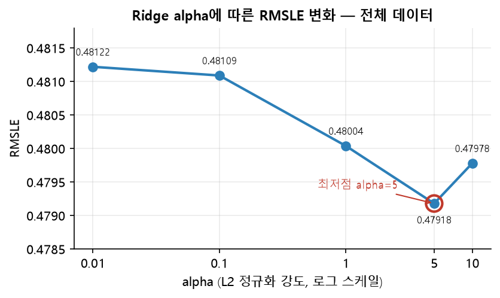
| alpha | RMSLE |
|---|---|
| 0.01 | 0.48122 |
| 0.1 | 0.48109 |
| 1 | 0.48004 |
| 5 | 0.47918 |
| 10 | 0.47978 |
alpha를 올리면 계수가 0 쪽으로 더 강하게 수축한다. 분산은 줄고 편향은 커진다.
alpha를 내리면 LinearRegression에 가까워진다. 편향은 줄고 분산이 커진다.
alpha=5까지 내려가다가 10에서 다시 올라가는 전형적인 편향-분산 절충 곡선이다.
solver='lsqr'도 이 데이터에 맞춘 선택이다.
희소 행렬을 밀집으로 바꾸지 않고 반복법으로 풀어, 44,941차원에서도 메모리 부담이 작다.
| alpha | 0.01 | 0.1 | 1 | 5 | 10 |
|---|---|---|---|---|---|
| RMSLE | 0.6924 | 0.7511 | 0.7511 | 0.7511 | 0.7511 |
alpha가 0.1 이상이면 값이 0.7511로 고정된다. L1 페널티가 계수를 정확히 0으로 만들어, 이 구간에서는 모든 계수가 0이 되고 절편만 남는다. 어떤 상품이든 같은 가격을 예측하는 무전략 모델과 같으므로, 0.7511은 이 데이터의 '기준선 오차'인 셈이다.
비교를 위해 RandomForestRegressor와 XGBRegressor도 같은 피처로 학습했다. 다만 44,941차원 희소 데이터에서는 두 모델 모두 심각한 자원 제약에 부딪혔다.
max_features 기본값은 전체 피처다. 분할마다 44,941개를 훑으면 학습이 끝나지 않아 max_features='sqrt', max_samples=0.5로 제한했다.tree_method='hist'는 원본이 희소해도 (행 × 열) 크기의 밀집 버퍼를 만든다. 148만 행 전체는 약 53GB가 필요해 할당에 실패하므로 40만 행으로 서브샘플링했다.1e-3 ~ 1e2, Lasso는 1e-4 ~ 1e-1을 로그 스케일로 탐색했고,
RandomForest는 트라이얼당 비용이 커서 시도를 6회로 제한했다.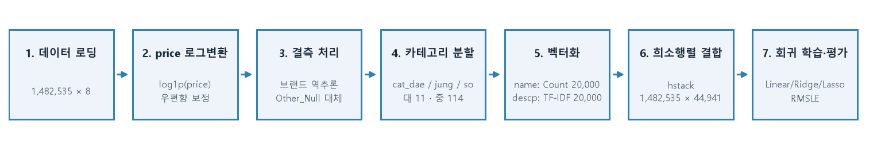
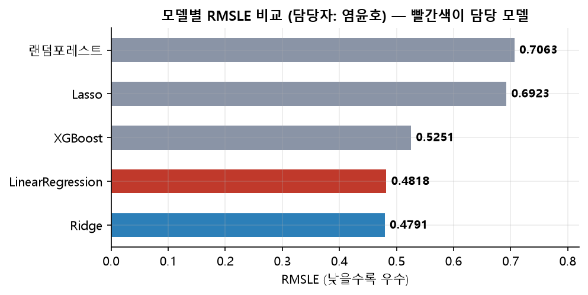
| 순위 | 모델 | RMSLE | 비고 |
|---|---|---|---|
| 1 | Ridge | 0.4791 | Optuna 적용 |
| 2 | LinearRegression (담당) | 0.4818 | 정규화 하이퍼파라미터 없음 |
| 3 | XGBoost | 0.5251 | Optuna 적용 |
| 4 | Lasso | 0.6923 | Optuna 적용 |
| 5 | 랜덤포레스트 | 0.7063 | Optuna 적용 |
5.5.4에서 확인한 0.7511이 이 데이터의 무전략 기준선이다. 모든 상품에 같은 가격을 부르는 모델의 오차가 그 값이다. Ridge는 0.4791로 기준선 대비 오차를 36.2% 줄였다. 한편 랜덤포레스트(0.7063)는 기준선을 겨우 6% 밑도는 수준에 그쳤다.
RMSLE 0.4791이라는 숫자만으로는 예측이 쓸 만한지 판단하기 어렵다.
실제 가격 범위로 바꿔 읽어야 한다.
RMSLE는 로그 공간에서의 오차이므로, 지수를 취하면 배수 오차가 된다.
로그 오차가 정규분포를 따른다고 가정하면 exp(RMSLE)가 곧 1표준편차에 해당하는 배수다.
exp(0.4791) = 1.615 # 약 1.6배 50 ÷ 1.615 = 31.0 # 하한 50 × 1.615 = 80.7 # 상한
| 모델 | RMSLE | 배수 오차 | 50달러 상품의 예측 범위 | 실용성 판단 |
|---|---|---|---|---|
| Ridge | 0.4791 | ×1.61 | $31.0 ~ $80.7 | 가격 제안의 출발점으로 쓸 만하다. |
| LinearRegression | 0.4818 | ×1.62 | $30.9 ~ $80.9 | Ridge와 사실상 차이가 없다. |
| XGBoost | 0.5251 | ×1.69 | $29.6 ~ $84.5 | 범위가 약 5달러 더 넓어진다. |
| 랜덤포레스트 | 0.7063 | ×2.03 | $24.7 ~ $101.3 | 상한이 하한의 4배를 넘어 제안 근거로 쓰기 어렵다. |
"실제로 50달러에 팔리는 상품에 대해, 모델은 약 68%의 확률로 31달러에서 81달러 사이의 가격을 제안한다. 판매자에게 '이 상품은 대략 30달러대에서 80달러대에 형성됩니다'라고 안내할 수 있는 수준이다."
이 폭을 어떻게 볼 것인가는 용도에 달렸다. 가격을 자동으로 확정하기에는 넓다. 그러나 판매자가 처음 가격을 정할 때 참고할 구간 제안으로는 충분히 의미가 있다. 무전략 기준선(RMSLE 0.7511, ×2.12)이 $23.6 ~ $106.0을 제시하는 것과 비교하면 차이가 분명하다.
RMSLE의 비대칭성도 함께 기억해야 한다. 5.2.1에서 설명했듯 이 지표는 낮게 예측한 쪽을 더 크게 벌한다. 따라서 RMSLE를 최소화하도록 학습된 모델은 구조적으로 지나치게 낮은 가격을 부르는 것을 피하는 방향으로 조정된다. 판매자 보호 관점에서 바람직한 성질이다.
선형 모델의 가장 큰 장점은 계수를 직접 읽을 수 있다는 점이다.
alpha=5로 재학습한 Ridge의 계수를 블록별로 잘라 확인했다.
학습 목표가 log1p(price)이므로, 계수 c는 가격에 exp(c)배의 영향을 준다는 뜻으로 읽는다.
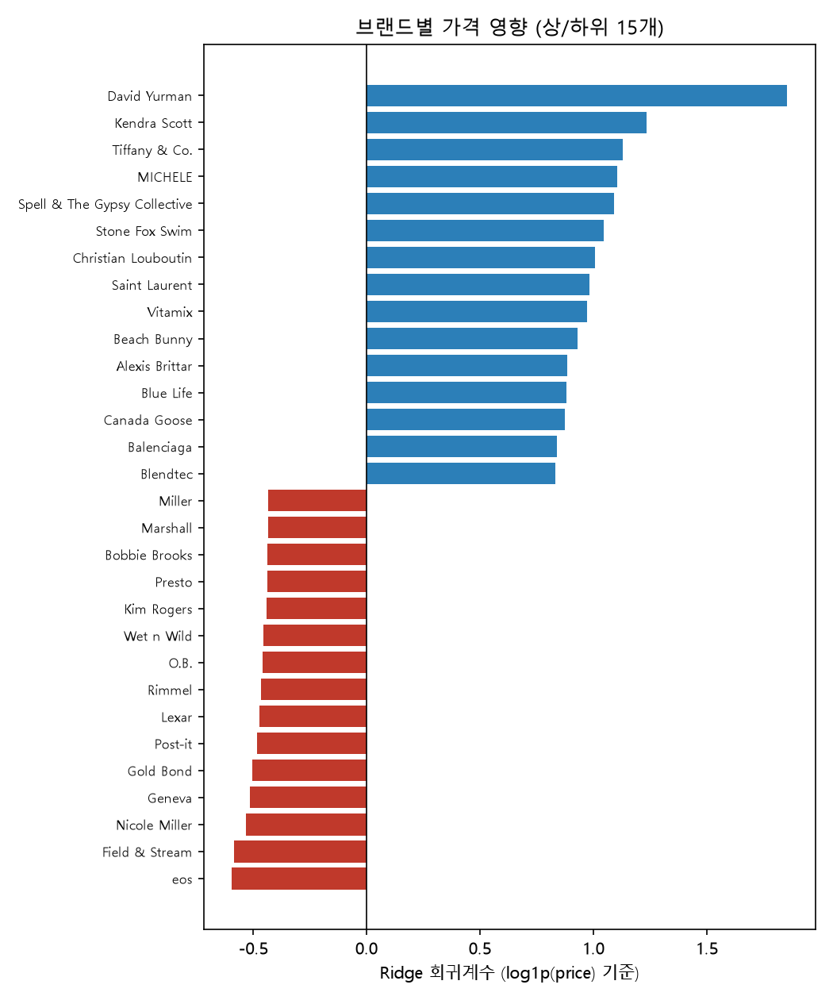
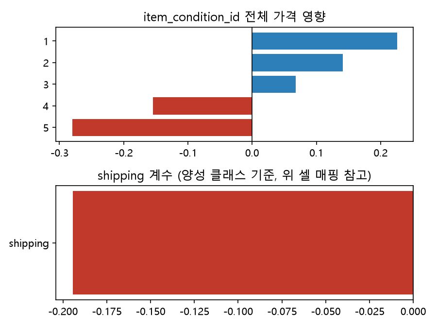
| 블록 | 항목 | 계수 | 가격 배수 | 해석 |
|---|---|---|---|---|
| 브랜드 | David Yurman | +1.855 | ×6.39 | 같은 조건의 무명 상품 대비 약 6.4배 높은 가격대를 형성한다. |
| Wet n Wild | −0.456 | ×0.63 | 저가 화장품 브랜드가 하위권에 모여 있다. | |
| 상품 상태 | 1등급(최상) | +0.226 | ×1.25 | 1등급에서 5등급으로 갈수록 계수가 단조 감소한다(+0.226 → +0.141 → +0.068 → −0.155 → −0.280). 등급 체계가 가격과 일관되게 연결돼 있다는 증거다. |
| 5등급(최하) | −0.280 | ×0.76 | ||
| 배송비 | shipping = 1 (판매자 부담) | −0.194 | ×0.82 | 판매자가 배송비를 부담하는 상품일수록 가격이 낮은 경향이 있다. 저가 상품일수록 판매자가 배송비를 떠안아 거래를 성사시키려는 패턴으로 보인다. 인과가 아니라 상관 관계다. |
| 카테고리 (대분류) | Electronics | +0.151 | ×1.16 | 11개 대분류 중 가장 높다. |
| Beauty | −0.116 | ×0.89 | 가장 낮다. 대분류 계수의 폭(−0.116 ~ +0.151)은 브랜드(−0.59 ~ +1.86)보다 훨씬 좁다. |
대분류 계수는 전 구간을 합쳐도 0.27 폭에 그친다. 반면 브랜드 계수는 2.4가 넘는 폭으로 벌어진다. 같은 Women 카테고리 안에서도 브랜드에 따라 가격이 몇 배씩 차이 난다는 뜻이다. 5.3.3에서 브랜드 결측 42.68%를 그냥 버리지 않고 148,714건을 되찾아온 판단이 이 결과로 정당화된다.
텍스트 계수에서도 같은 흐름이 확인된다.
상품명에서는 inr(+1.63), dyson(+1.28), airpods(+1.27) 같은 고가 브랜드·기기명이 상위를 차지한다.
설명문에서는 unlocked(+2.03), carat(+1.62), 14k(+1.59), 64gb(+1.52)처럼
스펙을 나타내는 표현이 가격을 끌어올린다.
반대로 envelope(−0.98), sticker(−0.65), coupons(−0.64) 등 소모품 관련 단어가 하위권이다.
n-gram을 3까지 확장한 덕분에 "space gray"(+1.30), "gift card"(+1.24) 같은 두 단어 표현도 피처로 잡혔다.
표 5-5의 순위는 상식과 어긋나 보인다. 보통 XGBoost와 랜덤포레스트가 단순 선형 회귀보다 강하다고 알려져 있다. 그러나 여기서는 순서가 정반대다. Ridge(0.4791)와 LinearRegression(0.4818)이 XGBoost(0.5251)와 랜덤포레스트(0.7063)를 앞선다. 이 역전은 데이터의 형태로 설명된다.
max_features='sqrt'로 분할마다 약 212개의 피처만 후보로 본다.
44,941개 중 212개를 무작위로 뽑으면 그 상품의 0이 아닌 단어가 후보에 들어갈 확률 자체가 낮다.
XGBoost는 메모리 한계로 40만 행만 학습해 나머지 108만 행을 보지 못했다.
따라서 트리 계열의 낮은 점수에는 알고리즘 특성과 자원 제약이 함께 작용했다.두 모델의 차이는 0.0027에 불과하다.
정규화가 극적인 개선을 주지 못한 것은 이미 벡터화 단계에서 차원을 통제했기 때문이다.
min_df=2로 한 번만 등장한 단어를 제거하고 max_features=20000으로 상한을 걸어,
과적합을 일으킬 만한 극단적 희귀 피처가 애초에 들어오지 않았다.
전처리에서 이미 규제를 걸어 두면 모델 단계의 정규화가 할 일이 줄어든다.
결과의 의미와 한계, 향후 개선 방향
본 장은 추후 추가 예정이다.
인용 자료 목록
본 장은 추후 추가 예정이다.
참고문헌 장이 채워지기 전까지, 본문에서 수치를 인용한 파일을 아래에 정리해 둔다.
염윤호/01 Santander Customer Satisfaction/01_Santander_Random_Forest.ipynb염윤호/02 Credit Card Fraud Detection/02_Creditcard.ipynb염윤호/04 Mercari Price Suggestion/Mercari_Price_Suggestion_LinearRegression_pure.ipynbtotal_result.xlsx — 시트 「01 산탄데르」, 「02 신용카드」, 「04 마켓 가격 예측」